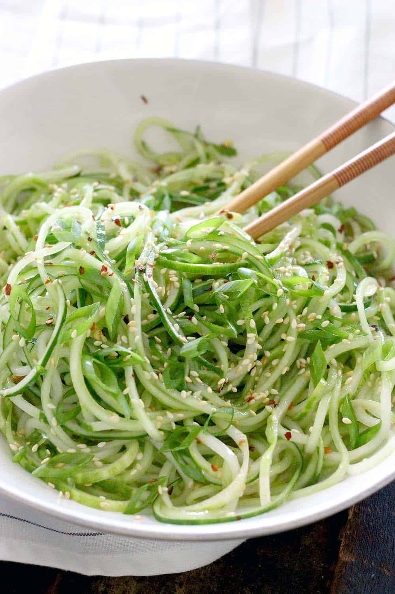

Green Salad

A healthy, easy to make green salad that can be made on a budget.
Ingredients:
For the dressing;
- Miso
- Dashi stock powder
- Soy sauce
For the salad;
- Courgette
- Carrots
- Eggs
- Roasted pinenuts
- Spring onions
Method:
- Spiralise the carrots and courgettes
- Add the eggs to boiling water and allow to cook for 8 minutes
- Slice the egg and add it in a bowl with the spiralised veg
- Dice the spring onion
- Add any other protein/veg as desired
- Add all of the sauce ingredients together with boiling water and mix well
- Add the sauce to the salad
- Top the salad with the pinenuts and spring onion
- Serve and enjoy
Storage life:
Store the vegtable and sauce seperate, combining just before serving. Sauce will last a 5 days in the fridge. Salad is best eaten on the day made.